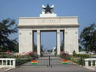

Discover Accra
History
Accra is one of the oldest and most vibrant cities in West Africa. From its colonial heritage to becoming the capital of Ghana, its journey has been one of cultural richness and economic resilience.
Demographics
- Population: 2.5 million+
- Languages: English, Ga, Twi, Ewe
- Main Religions: Christianity, Islam, Traditional
- Major Industries: Trade, Services, Tourism, Real Estate
Community Events
Annual festivals like Homowo, the Chale Wote Street Art Festival, and local durbars showcase the city's unique traditions and creativity.
City Gallery
